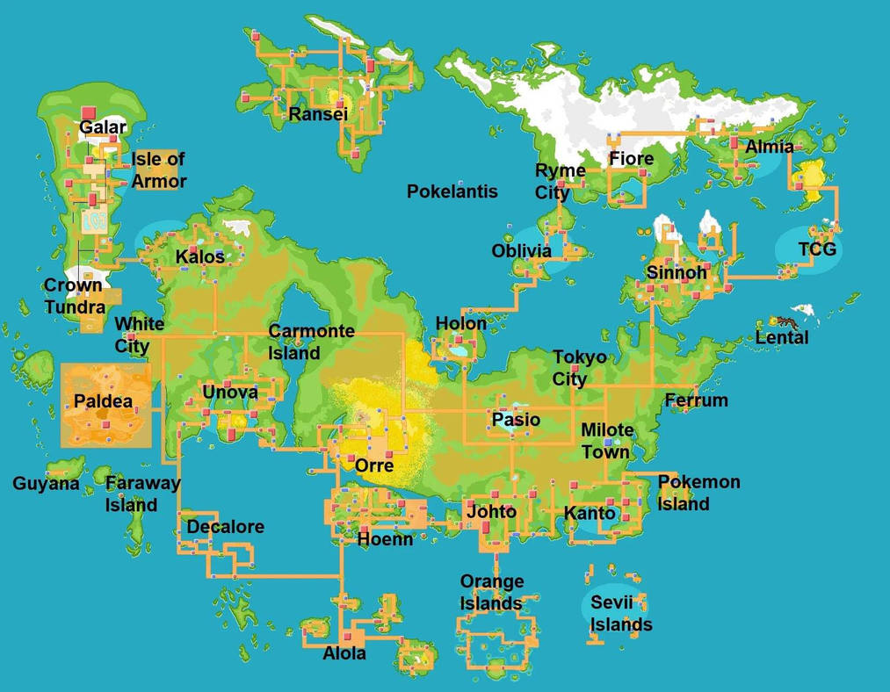

Página sobre pokémon
pokedéx
No universo de Pokémon, as regiões não devem ser vistas apenas como
divisões geográficas ou cenários de aventura, mas como representações
vivas de um mundo complexo, diverso e em constante transformação. Cada
região, de forma geral, funciona como um microcosmo com sua própria
cultura, clima, valores sociais e relação com os Pokémon, refletindo
diferentes formas de convivência entre humanos e essas criaturas. De
maneira ampla, as regiões Pokémon são construídas para transmitir a
ideia de diversidade. Existem áreas urbanas altamente desenvolvidas, com
grandes cidades, tecnologia avançada e centros de pesquisa, mas também
existem vilas simples, rotas naturais, florestas densas, cavernas
misteriosas e oceanos vastos. Essa variedade de ambientes reforça a
sensação de um mundo vivo, onde diferentes espécies de Pokémon se
adaptam a habitats específicos, criando ecossistemas únicos. Outro
aspecto importante é a cultura. Em algumas regiões, percebe-se uma forte
ligação com tradições antigas, lendas e mitos que envolvem Pokémon
considerados especiais ou até divinos. Em outras, o foco está no
progresso, na ciência e na inovação, com estudos sobre evolução, energia
e até a própria origem dos Pokémon. Essa dualidade entre tradição e
modernidade aparece frequentemente e ajuda a enriquecer a narrativa do
mundo. As regiões também refletem diferentes formas de organização
social. Em muitas delas, há sistemas estruturados de desafios e
competições, que incentivam treinadores a crescer, desenvolver
habilidades e criar laços com seus Pokémon. Em outras, as jornadas são
mais pessoais, menos guiadas por regras rígidas, valorizando a
exploração, a descoberta e o autoconhecimento.

Além disso, há um elemento recorrente de equilíbrio. O mundo Pokémon
frequentemente apresenta conflitos ligados à natureza, ao uso de
recursos ou ao poder excessivo. Certas regiões destacam a importância de
manter harmonia entre humanos, Pokémon e o meio ambiente. Isso aparece
tanto em histórias quanto na própria ambientação, onde mudanças
climáticas, fenômenos naturais e forças desconhecidas desempenham papéis
importantes. A relação entre humanos e Pokémon também varia bastante de
uma região para outra. Em alguns lugares, os Pokémon são vistos
principalmente como parceiros de batalha e competição. Em outros, são
companheiros do cotidiano, ajudando em tarefas, convivendo de forma mais
integrada à sociedade ou até sendo considerados parte da família. Essa
diferença mostra como o vínculo pode assumir formas diversas, indo muito
além das batalhas. Outro ponto marcante é a sensação de jornada.
Independentemente da região, existe sempre um incentivo à exploração.
Caminhar por rotas desconhecidas, descobrir novos Pokémon, enfrentar
desafios e crescer como treinador são elementos universais. As regiões
são desenhadas para guiar esse processo, oferecendo obstáculos,
recompensas e momentos de descoberta. No geral, as regiões de Pokémon
representam a ideia de um mundo amplo e multifacetado, onde cada lugar
conta uma história diferente. Elas mostram que não existe uma única
forma de viver ou se relacionar com os Pokémon, e que a riqueza desse
universo está justamente na variedade de experiências possíveis. Assim,
mais do que simples cenários, as regiões são parte essencial da
identidade de Pokémon, servindo como palco para aventuras, aprendizados
e conexões que definem toda a jornada.